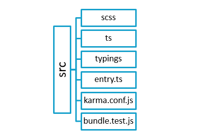

About ChatElite
ChatElite is a web application that provides peer-to-peer and group chat. ChatElite is developed using Node.js and Mongo DB for database. ChatElite can be used as pluggable chat tool by using collapsed mode. This mode can be used to integrate ChatElite with another web-based application.
ChatElite lets users send messages and files to one another. Besides, users can create groups and also add and remove users from their list. Some of the important features of ChatElite are as follows:
- Transfer chat: Users can transfer the entire one-on-one or group chat/conversation to another person or via email.
- Convert chat into group for peer-to-peer chats and for group chat
- Add users to group: Once a group is formed, user can add new users to the group.
- Remove users from group: From a group, user can remove certain users.
- Leave group: If user is added to certain ChatElite group and doesn’t wish to be a part of it anymore, he can leave the group.
- Search for a keyword in chat: User can search for a keyword within a chat.
- Download chat: User can download the chat and keep a copy on the PC.
- Marking a message as favourite (or as un-favourite if marked as favourite previously)
- Deleting messages
- Replying to messages
- Read receipts: Users can view who has read their messages.
A user-friendly chat application:
One of the most important features that ChatElite holds, is its easy use. Here are some more features that make the ChatElite app user-friendly:
- Users can find the recent chats they were involved in, groups that they were part of and the users added to their list.
- Users can view particular chat on clicking on any of the groups or recent chats.
- For a peer-to-peer chat, a user can find the groups that one has in common with the particular user and the favourite messages in that chat.
- For a group, a user can see all the group members’ information and remove any member if the group has been created by the user himself.
- One can also view the shared links in the group chat and the favourite messages in that group chat.
Prerequisites
- Git
- On Windows:
- Download the latest Git for Windows installer.
- When you have successfully started the installer, you will see the Git Setup Wizard screen. Follow the Next and Finish prompts to complete the installation.
- Open a Command Prompt (or Git Bash if during installation you elected not to use Git from the Windows Command Prompt).
- Run the following commands to configure your Git username and email using the following commands.
$ git config --global user.name “user name” $ git config --global user.email “email id”
- On Windows:
On Linux/Mac: To install on a Linux or a Mac, follow these instructions.
Node: Follow these instructions to download and install Node.js according to your operating system.
Mongo: Follow these instructions to download and install Mongo DB according to your operating system and requirement.
Visual Studio: It is recommended. However, you can use any other editor. Follow these instructions to install Visual Studio.
System Design
Architecture
Web-UI repository structure

This repository contains the code for UI which includes HTML and view-related files. The web-UI repository has src folder which contains all components in the ts typescript format.
The SCSS folder contains the general and theme-related stylesheet files which after compilation are converted to CSS files. The external CSS files are also imported.
The TS folder contains typescript files for web-UI components which after compilation are converted to js files. It consists of globally declared variables, HTML codes, controller, components, services, interfaces, enums, configuration files, constants, decorators, external files.
The Typings folder contains package typings.
entry.ts: All files from different packages are imported here. bundle.test.js: It includes test cases. Karma.conf.js: It includes configuration settings for karma.
Different loaders are used by webpack to compile the code. The compiler will create bundled JavaScript file.
Start the UI application using NPM start.
Repositories
- T-web API: This repository contains the wrapper methods and framework code which includes socket related methods, server connection and express connection. User has to create instances of classes mentioned in T-web API.
- ChatEliteService: This repository contains the server-side code which includes business logic, database queries, Socket APIs, REST APIs and API call execution methods.The documentation for this repository is available here.
ChatEliteUi: This repository contains the code for UI which includes HTML and view-related files.The documentation for this repository is available here.
Before execution on localhost install -
typescript using following command : typescript is used to compile the code to javascript
npm install -g typescript
forever using following command : forever is used to daemonize the process
npm install forever -g
Execution on localhost
Download and unzip T-web API Repository
Go to T-web API Repository
npm installnpm link
Start Mongo server
- On the mongodb terminal execute the following command
- mongod
- On the mongodb terminal execute the following command
Go to Service repository
npm install- Compile using command
tscor using short cut Ctrl+Shift+b - Run the service using command
node app.jsor run in debug mode (for development) using VSC debug command
Go to Web-UI repository
npm install(installs all in package.json)npm start
Go to browser, in the address bar enter https://localhost:1234 This is needed to trust the certificate as ChatElite uses self-signing certificate.
For client interface, go to browser, in the address bar enter https://localhost:8080
First register user and then login with that credentials.
Contribution Guidelines
See the contributing guidelines here.
Licensing
Licensed under the MIT License.
Contributors
Thanks goes to these wonderful folks for contribution :
 Pranay Dutta 💻 🤔 |
 Abhijeet sonaje 💻 🤔 |
 Nayan Kamble 💻 📖 |
 Ravichandra Bhanage 💻 |
 Prashant Ipte 🎨 |
 Shailesh Pardeshi 🤔 |
|---|---|---|---|---|---|